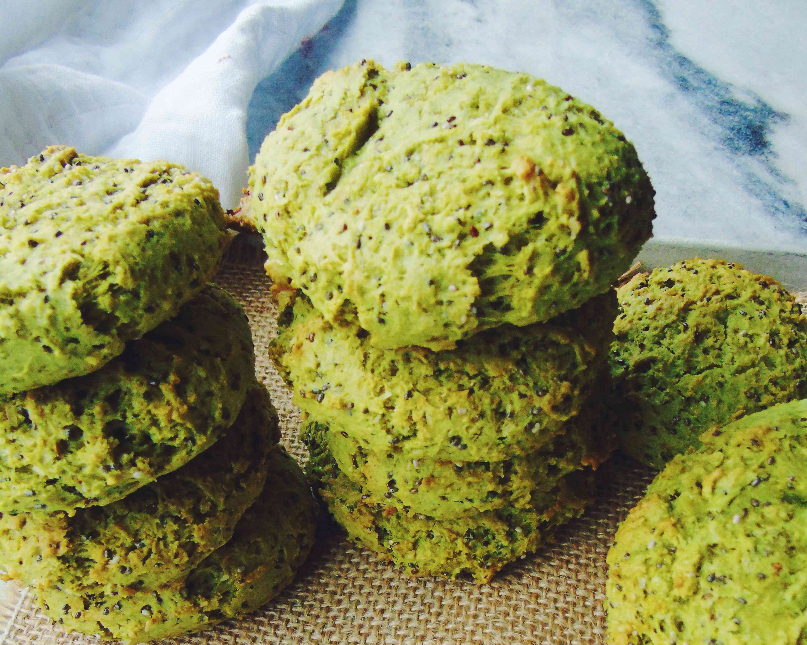
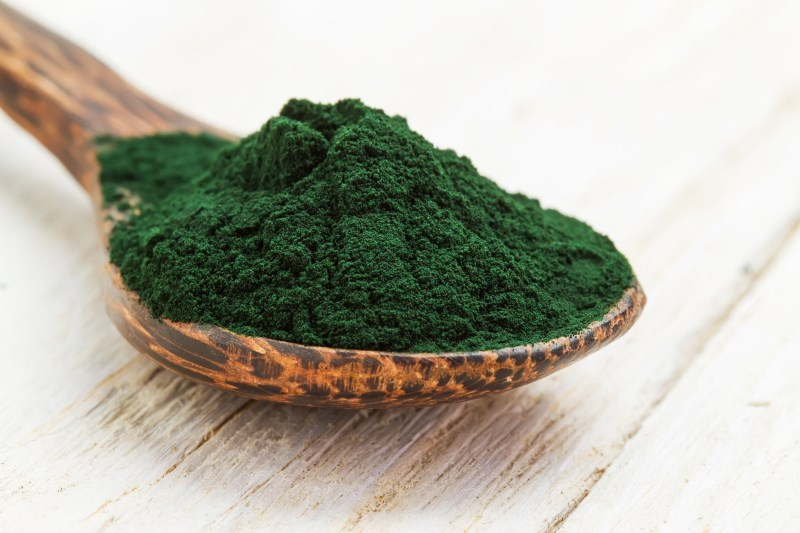
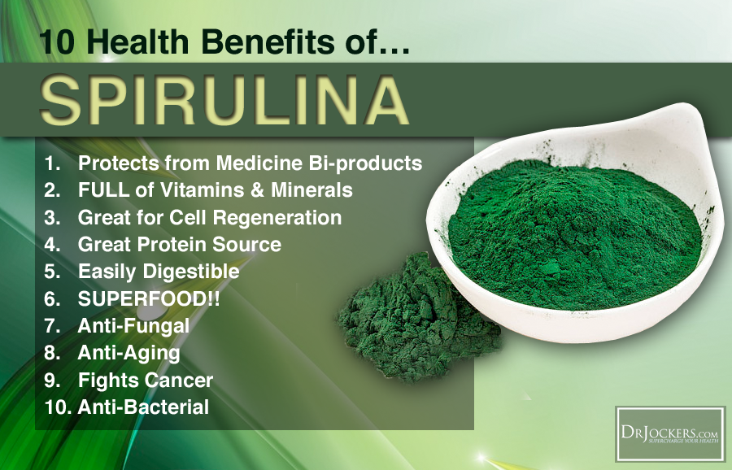

Pat's Algae Cookies
Get the benefits of spirulina in a tasty, sugar-free, fat-free, slightly gross snack!
Open 10-7 Daily At:
Pike Place, Sea Tac Airport, South Center, Bellevue Square and Alki Beach
Algae cookies are delicious and nutritious! The health benefits are unmatched by any other cookies on the market today. They are perfect for daily snacking or parties!
Made with algae and other organic, locally sourced, and ethically farmed ingredients, your body and your conscience will both love this treat. Pat’s uses only the highest quality ingredients, meaning from start to finish, you can have confidence in what you’re enjoying when you buy Pat’s Algae Cookies!
